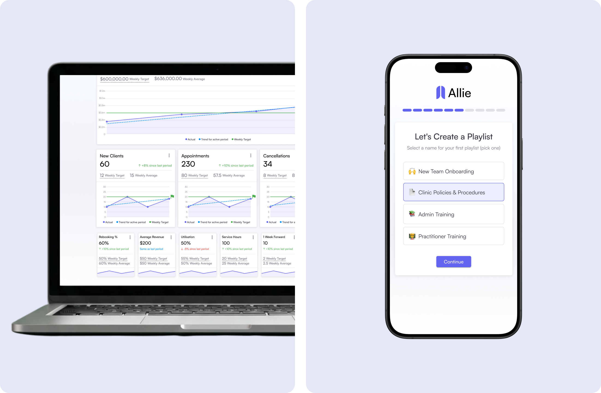
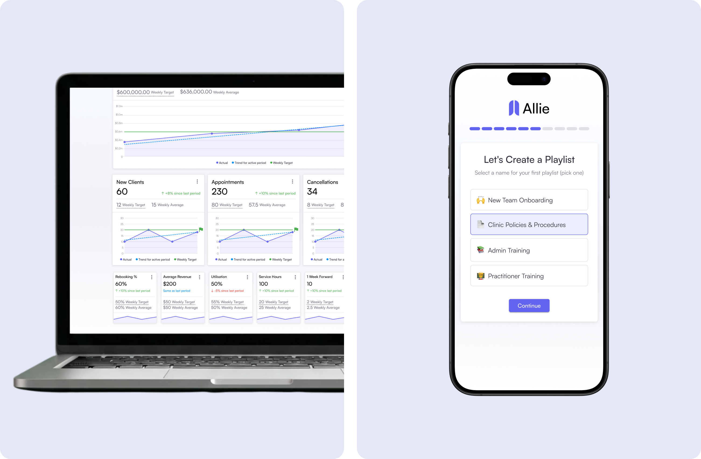
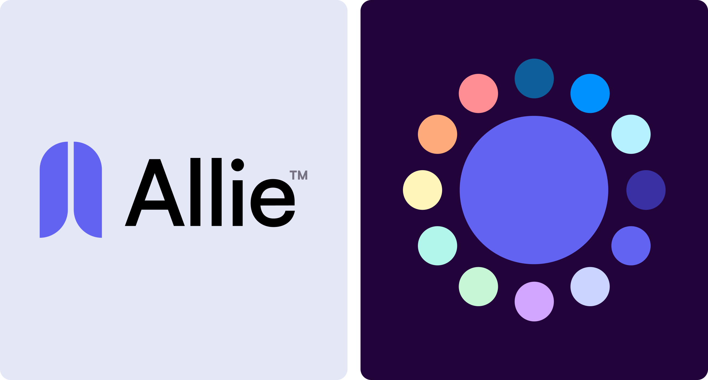
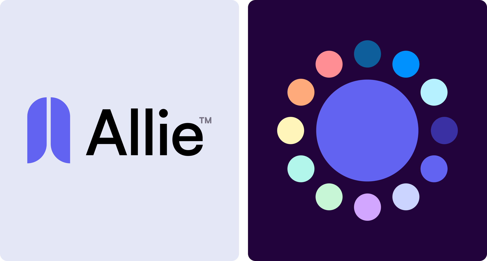
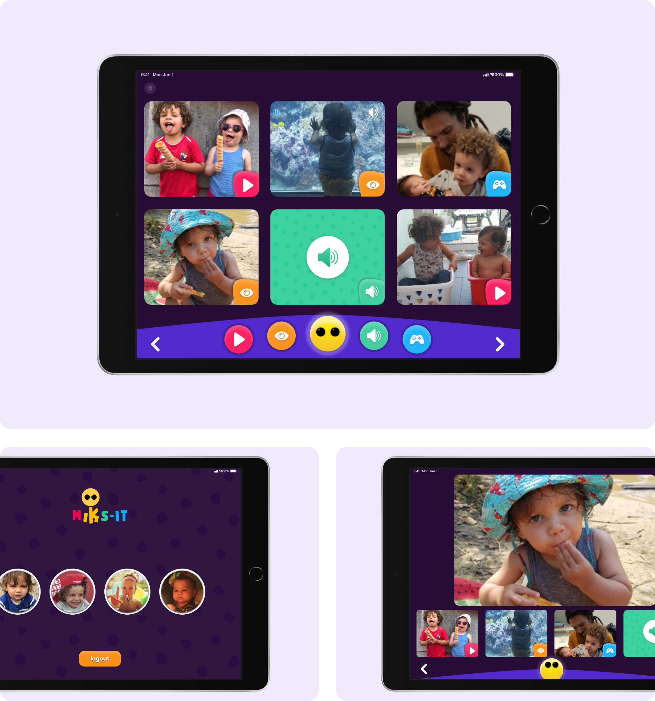
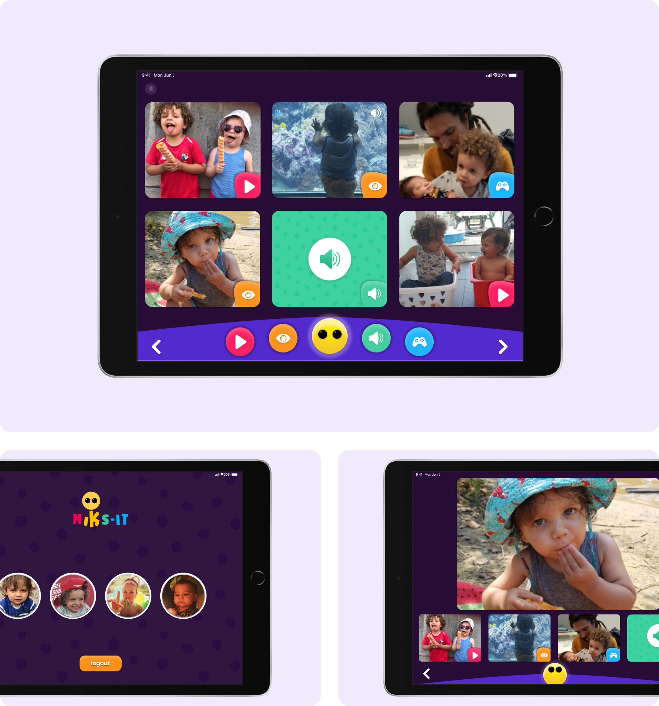
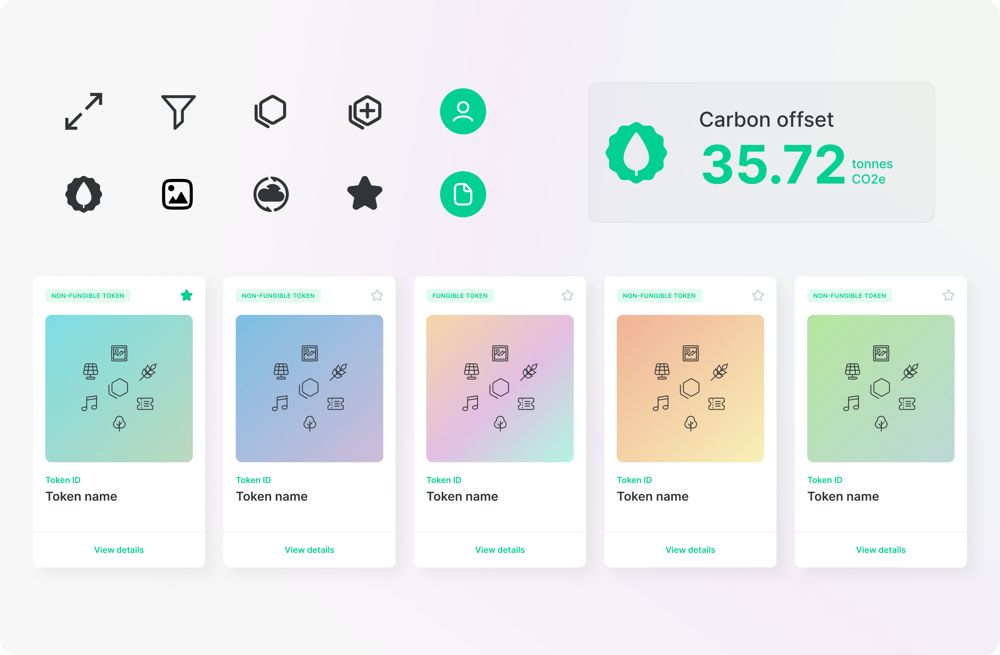
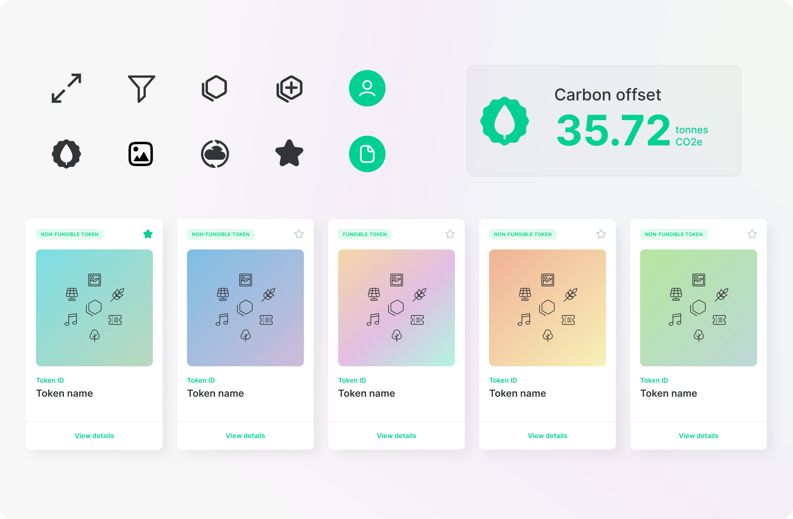

Product Design Portfolio
Allie
Allie is a performance management platform that transforms how allied health clinics track and manage practitioner success. As Senior Product Designer at Growthbox, I led the complete design vision for this SaaS solution, working as the sole designer on a 9-month MVP project.
I collaborated with clinic owners and practitioners to design an automated system that eliminated manual data entry and provided real-time insights. The result was a comprehensive platform with separate interfaces for clinic owners and practitioners, featuring automated Cliniko integration and performance benchmarking.
View full case study here.
Client: Clinic Mastery
 


 


Uwai
UWAI is a gift card savings platform connecting users to discounts from over 3,000 merchants across Australia. As Lead Product Designer, I spearheaded a complete redesign that transformed the app from a transactional tool into an everyday savings companion.
Working as the sole designer over 8 months, I partnered with a marketing agency to conduct user research and reimagined the core experience around brands rather than individual transactions. I introduced a wallet-style interface and VIP subscription model that delivered significant user and revenue growth.
View full case study here.
Client: International Travel Technology


mIKs-it
miKs-it is a digital media platform designed specifically for children with developmental or physical disabilities, providing a secure environment for personalised content engagement. As Senior Product Designer at Meeco, I led the design for this innovative application co-developed with Heder, a Belgian special needs school.
I collaborated with accessibility experts and conducted extensive user research with 7 test families to create two interconnected applications – an accessible interface for children and a comprehensive content management tool for parents. The platform features end-to-end encryption and interfaces designed specifically for accessibility device compatibility.
View full case study here.
Client: Heder School
 


Trustury
Trustury is a decentralised platform enabling users to manage, verify, and share carbon token information within the Hedera ESG ecosystem. As Lead Product Designer at Meeco, I spearheaded the entire creative direction for this innovative web application addressing the growing need for transparent carbon credit management.
I collaborated with 2 other designers to create a comprehensive design system that could handle complex blockchain interactions while remaining accessible to users unfamiliar with decentralised technologies. Working closely with our development team, I helped implement a solution that brings transparency and trust to the carbon credit marketplace.
Client: Hedera


 

Vela Credentials Wallet
The Vela Credentials Wallet provides a secure decentralised platform for workers and workplaces to issue and verify workplace credentials using blockchain technology. As Lead Product Designer at Meeco, I worked directly with Vela Solutions to adapt our existing design framework to their specific brand requirements and user needs.
Through direct interaction with their target audience of workers and employers, I led the design of a mobile experience that makes complex credential verification feel simple and trustworthy. The result was a mobile application that provides powerful security features through an intuitive, user-friendly interface.
Client: Vela Solutions


Meeco Secure Value Exchange (SVX) Portal
The Secure Value Exchange Portal provides a web-based interface for organisations to manage their verifiable credential ecosystems and facilitate secure data transactions. As Lead Product Designer at Meeco, I led a team of 3 designers through the complete end-to-end design process, from establishing our user research program to implementing a comprehensive design system.
We created a platform that enables organisations to issue, verify, and manage digital credentials while maintaining complete control over their data ecosystem. The interface handles complex administrative functions while remaining accessible to users with varying levels of technical expertise.


Meeco Digital Vault
The Meeco Digital Vault is an end-to-end encrypted secure data storage platform serving both organisations and individuals who need to protect sensitive information. As Lead Product Designer at Meeco, I led the efforts to completely overhaul the existing application and establish a new visual direction.
We created a comprehensive design system that balanced sophisticated security features with an intuitive user experience. The challenge was making complex encryption and data management feel approachable while maintaining the gravitas appropriate for enterprise-grade security.
Fodder Online
Fodder Online is an agricultural marketplace connecting fodder buyers and sellers across Australia's farming community. As a solo designer, I worked closely with the intended user base – farmers and agricultural suppliers who traditionally conduct business offline – to design an MVP platform that felt familiar and trustworthy.
The unique challenge was creating a digital marketplace for users who don't typically spend much time online and prefer face-to-face transactions. I used familiar UI patterns and design conventions to minimise the learning curve while incorporating agricultural-specific features like seasonal availability and quality specifications.

Jemsoft Monocular API Dashboard
The Monocular API is an advanced computer vision service that enables developers to integrate sophisticated visual recognition capabilities into their applications. As a solo designer for Jemsoft, I created a developer-focused dashboard that simplifies the typically complex process of API setup and management.
I designed an interface that guides users through API configuration, usage monitoring, and subscription management with clear visual feedback and intuitive workflows.


Palamir Smart City Dashboard
The Palamir Smart City Dashboard is a web-based platform that aggregates multiple data sources to provide city administrators with a comprehensive overview of urban infrastructure and public safety. As a solo designer, I was brought in after Palamir had built their initial prototype to transform their complex data visualisation into an intuitive, actionable interface.
I used strategic colour coding and iconography to help users quickly discover and interpret critical information across diverse data streams. The solution enhanced information discovery through thoughtful design, enabling city officials to monitor and respond to urban challenges more effectively.